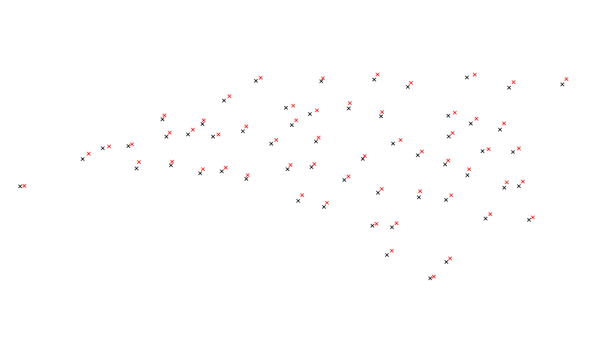

DESCRIPTION
v.perturb
reads a vector map of points and writes the same points but
perturbs the eastings and northings by adding either a uniform
or normal delta value. Perturbation means that a variating spatial
deviation is added to the coordinates.
NOTES
The uniform distribution is always centered about zero.
The associated parameter is constrained to be positive and
specifies the maximum of the distribution; the minimum is
the negation of that parameter. Do perturb into a ring around the
center, the minimum parameter can be used.
Usually, the mean (first parameter) of the normal
distribution is zero (i.e., the distribution is centered at
zero). The standard deviation (second parameter) is
naturally constrained to be positive.
Output vector points are not guaranteed to be contained within the
current geographic region.
EXAMPLES
Random, uniformly distributed selection
To create a random, uniformly distributed selection of possible new points
with a radius of 100,000 map units, use the following command:
v.perturb input=comm_colleges output=uniform_perturb parameters=100000
 Figure: Map showing the actual community college points and uniformly
random chosen points.
Figure: Map showing the actual community college points and uniformly
random chosen points.
Normal distributed selection
For a normal distribution with a mean of 5000 and standard deviation of
2000, use the following command:
v.perturb input=comm_colleges output=normal_perturb distribution=normal parameters=5000,2000

Figure: Map showing the actual community college points and normally
random chosen and colored points. Notice that each point is closer
to the original point.
Normal distributed selection with a minimum value
In order to include a minimum value of 500, use the following command:
v.perturb input=comm_colleges output=min_perturb distribution=normal parameters=100000,1000 minimum=500
SEE ALSO
v.random,
v.univar
AUTHOR
James Darrell McCauley
when he was at:
Agricultural Engineering
Purdue University
Random number generators originally written in FORTRAN by Wes Peterson and
translated to C using f2c.